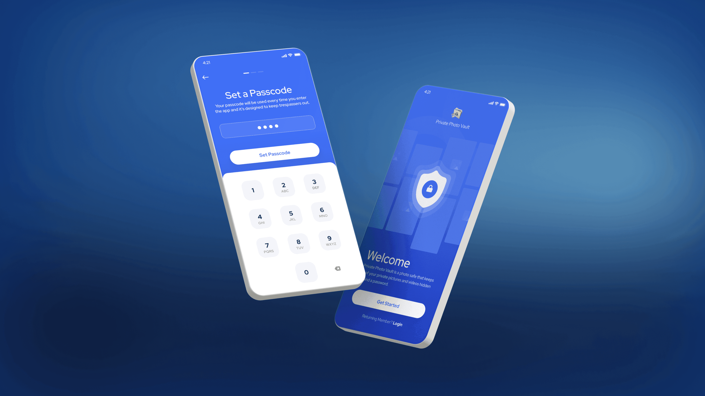
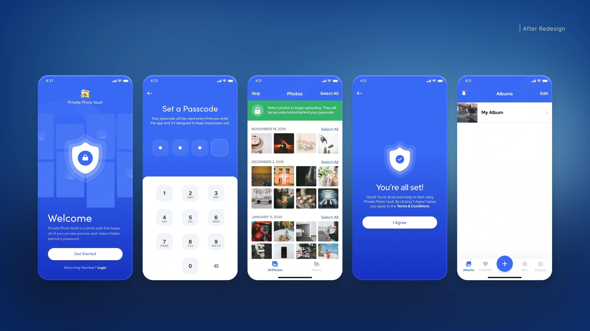
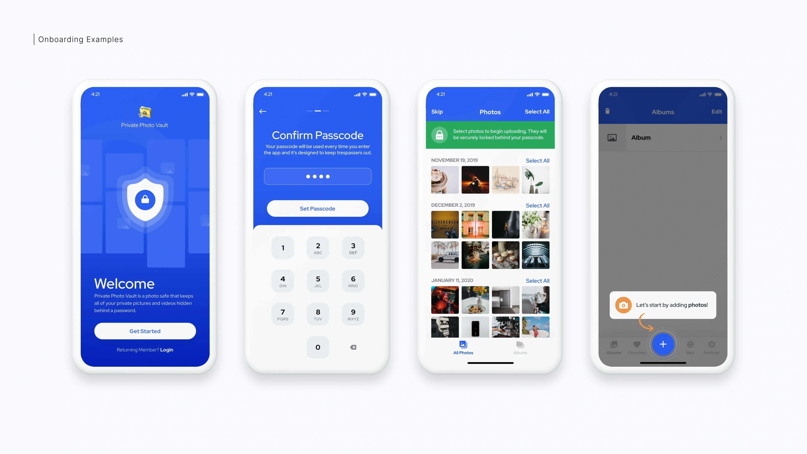
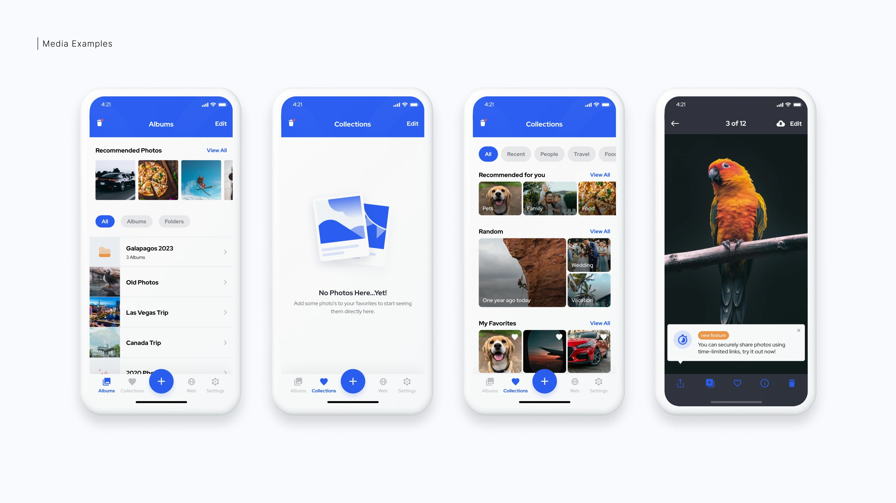
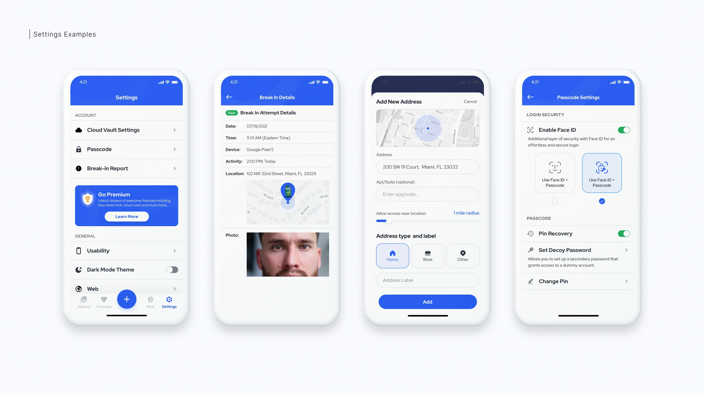
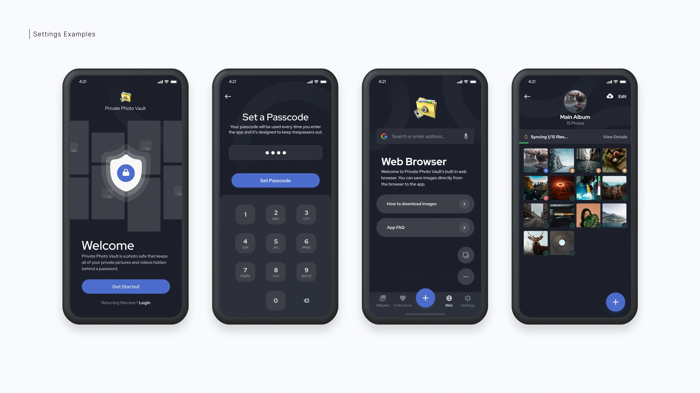

PhotoVault is a leading photo and video security app with millions of users. When I joined as Lead Product Designer, the app had ~300k ratings; three years later, it surpassed 900k 5-star reviews. I led the iOS and Android redesign, collaborating with the Founder, PM, and Engineering team to improve the experience, improve accessibility, and boost conversion rates on their paywall.

I collaborated with the Founder, PM, and Engineering team to overhaul Private PhotoVault's mobile app. The redesign included optimizing various app areas, introducing a new dark mode with accessibility features, and enhancing the paywall to reduce churn and increase conversions.
I overhauled the app's interface to build trust and usability, introducing a modern design system grounded in WCAG accessibility standards. Alongside a refreshed visual style, I created developer-ready files with annotations, animations, and interaction patterns to streamline implementation.

The onboarding flow was redesigned to reduce friction and increase completion rates. Key improvements included clearer value propositions, simplified permission requests, and progressive disclosure of features.

Dark mode was designed with a carefully balanced palette for readability and reduced eye strain, and all decisions were documented to ensure consistency across platforms. The design system included comprehensive color tokens for both light and dark themes.

To address high churn, I conducted competitor research and a heuristic evaluation of the paywall. Working with the PM and Founder, I designed and tested multiple variations, adjusting layout, copy, and color schemes across light and dark modes.

A one-week A/B test showed the new designs beat the original by 20%, with the best-performing option improving conversions by 5% over other variants. Building on this success, I implemented additional refinements and iterated through further testing rounds to maximize retention and engagement.

Accessibility as Foundation: Building WCAG compliance into the design system from the start made dark mode implementation straightforward and ensured all users could navigate the app effectively.
Iterative Testing: The 20% improvement from A/B testing validated our hypothesis that small copy and layout changes could significantly impact conversions. Continuous testing became core to our design process.
Cross-Functional Collaboration: Close partnership with Engineering ensured design specs were implemented accurately, while working directly with the Founder helped align business goals with user needs.